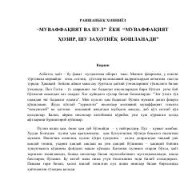

MVMoliyaviy mustaqillikka erishish uchun amaliy qo'llanma.
Ushbu kitob Ravshanbek Xonniyozning 'Muvaffaqiyat va pul' seriyasining birinchi qismi bo'lib, pul va moliyaviy mustaqillik haqida amaliy bilimlar beradi. Muallif pul neytralligi, to'g'ri moliyaviy fikrlash va hayotning barcha sohalarida muvozanatni saqlash muhimligi haqida so'zlaydi. Kitob o'quvchini moliyaviy muvaffaqiyatga erishish uchun zarur ko'nikmalar va yondashuv bilan qurollantiradi.